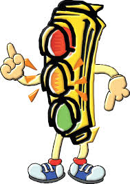

|  |
|
Los semáforos son dispositivos de señales que se sitúan en intersecciones viales y otros lugares para regular el tráfico, y por ende, el tránsito peatonal.
El primer semáforo, diseñado por John Peake Knight, se instaló en Londres en 1868.
La palabra semáforo proviene del griego σῆμα (sema), que significa señal, y φόρος (foros), que significa portador, es decir, un semáforo es lo que "lleva las señales".